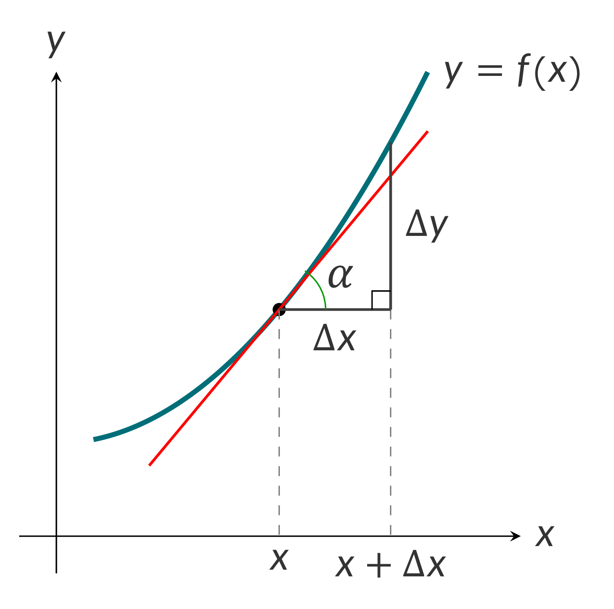

Functions: $f,g,y,u,v$
Independent variable: $x$
Real constant: $k$
Angle: $\alpha$
- $\displaystyle y'(x) = \lim_{\Delta \to 0}\dfrac{f\big(x + \Delta x\big) - f(x)}{\Delta x} = \lim_{\Delta x\to 0}\dfrac{\Delta y}{\Delta x} = \dfrac{dy}{dx}$

- $\dfrac{dy}{dx} = \tan \alpha$
- $\dfrac{d(u + v)}{dx} = \dfrac{du}{dx} + \dfrac{dv}{dx}$
- $\dfrac{d(u - v)}{dx} = \dfrac{du}{dx} - \dfrac{dv}{dx}$
- $\dfrac{d(ku)}{dx} = k\dfrac{du}{dx}$
- Product Rule
$$\dfrac{d(u\cdot v)}{dx} = \dfrac{du}{dx}\cdot v + u\cdot \dfrac{dv}{dx}$$
- Quotient Rule
$$\dfrac{d}{dx}\Big(\dfrac{u}{v} \Big) = \dfrac{ \dfrac{du}{dx}\cdot v - u\cdot\dfrac{dv}{dx} }{v^2}$$
- Chain Rule
$$\begin{aligned}
&y = f\Big( g(x)\Big),\quad u = g(x) \\\\
&\dfrac{dy}{dx} = \dfrac{dy}{du}\cdot \dfrac{du}{dx}
\end{aligned}$$
- Derivative of Inverse Function
$$\dfrac{dy}{dx} = \dfrac{1}{ \dfrac{dx}{dy} },$$
where $x(y)$ is the inverse function of $y(x)$.
- Reciprocal Rule
$$\dfrac{d}{dx} \Big(\dfrac{1}{y} \Big) = -\dfrac{ \dfrac{dy}{dx} }{y^2} $$
- Logarithmic Differentiation
$$\begin{aligned}
&y = f(x),\, \ln y = \ln f(x),\\\\
&\dfrac{dy}{dx} = f(x)\cdot \dfrac{d}{dx}\Big[\ln f(x) \Big]
\end{aligned}$$